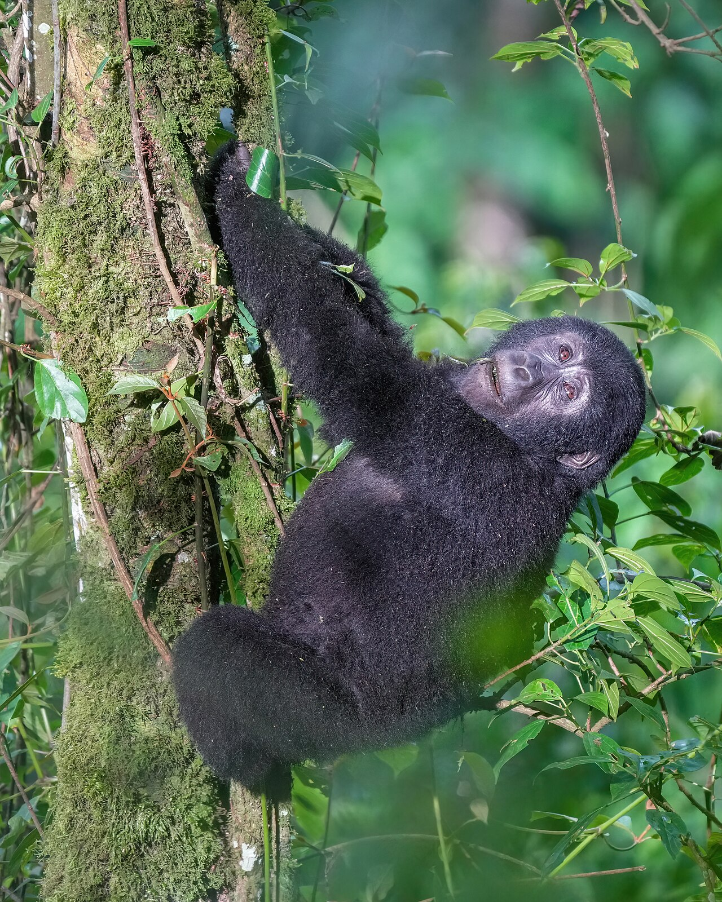
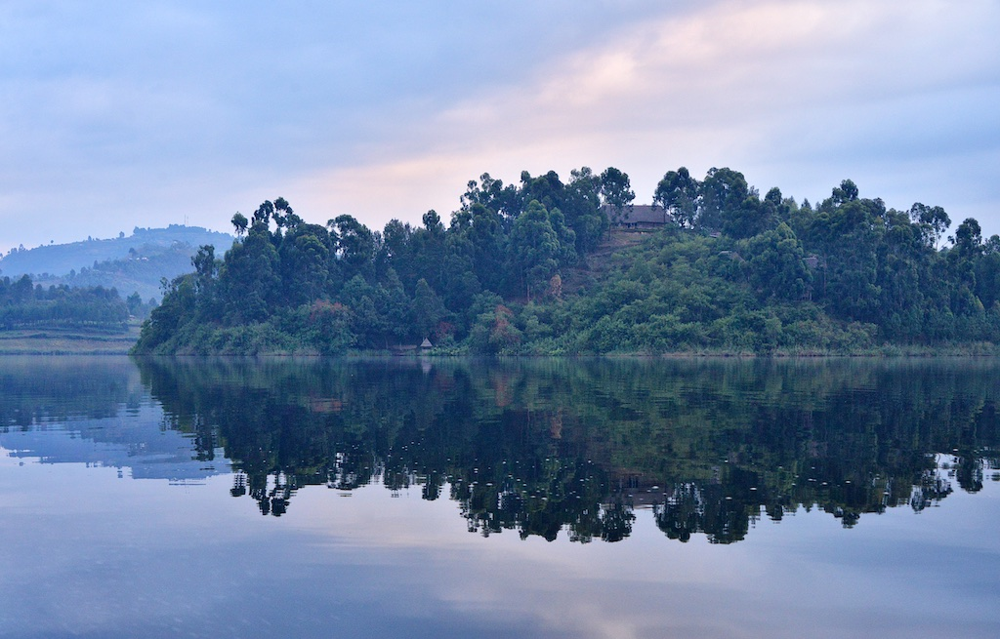
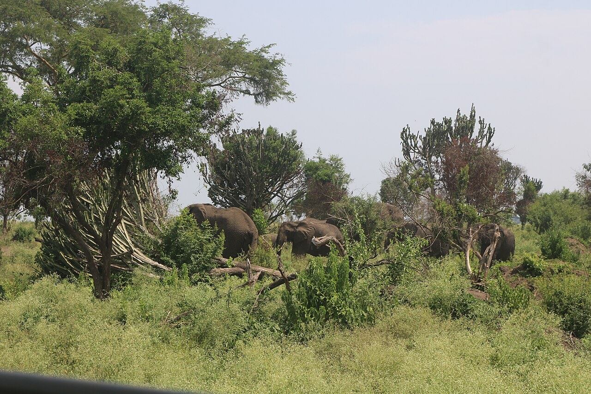
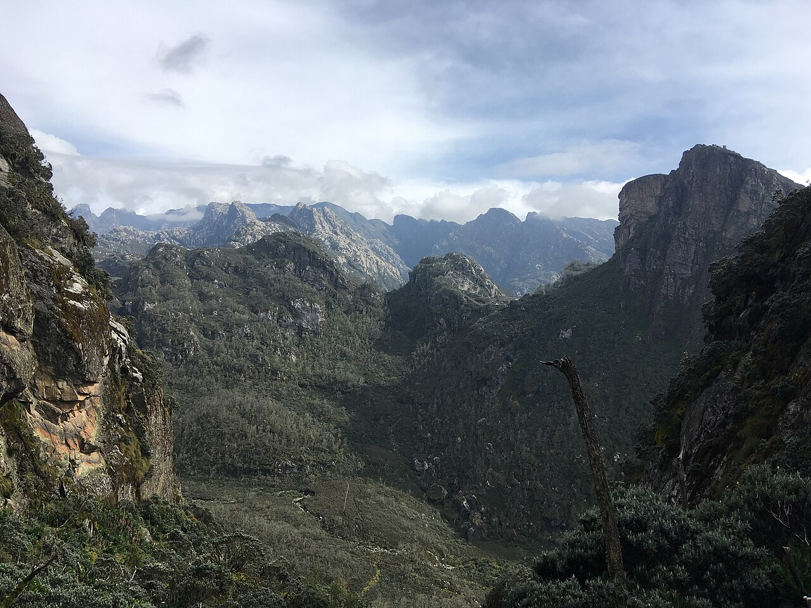
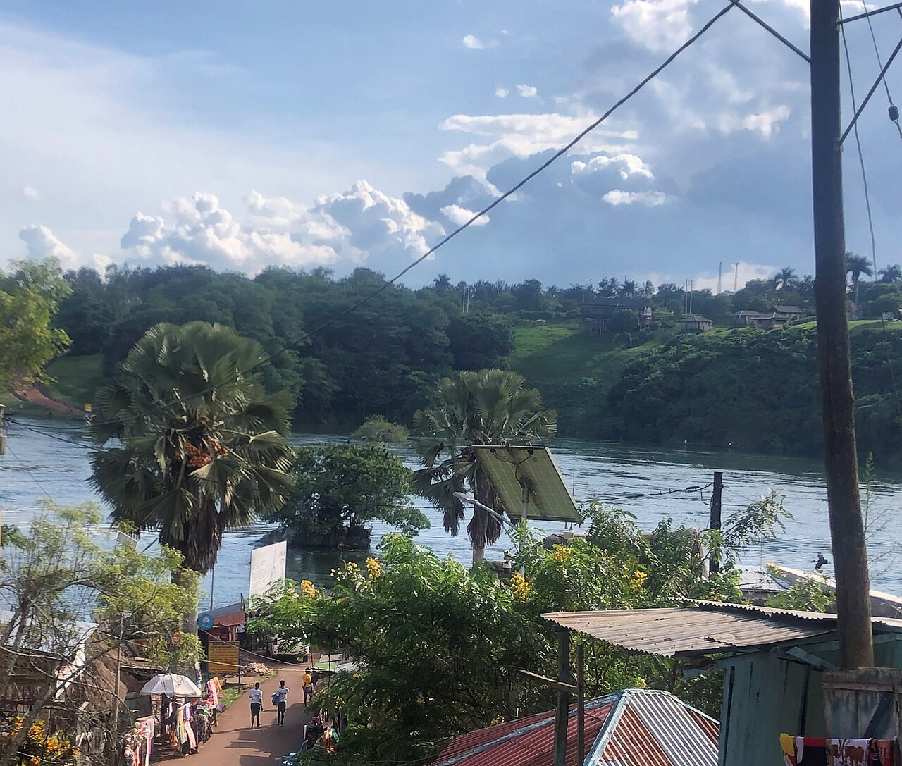

_Photo_by_Giles_Laurent.jpg){kind=link}
.jpg){kind=link}


“Which national park should I visit for wildlife and what activities can I do there?”
The destination pages will summarize highlights and help visitors explore suitable activities and trip ideas.
WDD 131 · W05 Website Planning
Website planning document
The strategy, visual direction, and homepage structure for a welcoming guide to exploring Uganda.
View homepage wireframesExplore the country
These locally stored photographs set the direction for the destination cards planned for the finished travel guide.
The Nile thunders through a dramatic cleft in the rock.
Photo: NANTUMBWEJ · CC BY-SA 4.0
Explore misty forest habitat famed for its mountain gorillas.
Photo: Giles Laurent · CC BY-SA 4.0
Quiet islands and terraced hills frame this scenic lake.
Photo: Rod Waddington · CC BY-SA 2.0
Look for elephants and other wildlife across varied savanna landscapes.
Photo: Alvinategyeka · CC0
Discover the high-altitude trails and landscapes of the Mountains of the Moon.
Photo: GarethBessant · CC BY-SA 4.0
Visit the landmark where the Nile begins its journey north.
Photo: Christopher Liberty · CC BY-SA 4.001 / Identity
The name is direct, inviting, and easy to remember. “Explore” promises discovery and active travel, while “Uganda” makes the destination unmistakable to both local and international visitors. Together, they leave room for wildlife, landscapes, culture, and practical trip planning.
02 / Strategy
Explore Uganda will help tourists and Ugandans discover places to visit and make informed decisions about what to do next. It will bring destination information together with travel tips, suggested activities, and photography so visitors can move from inspiration to a realistic trip idea.
The guide will feature Uganda’s national parks, waterfalls, lakes, cultural sites, and other attractions. Visitors can browse destination highlights, compare activity ideas, learn useful planning basics, and use a contact form to send questions or make an inquiry.
Audience: Ugandan travelers, international tourists, families, students, travel enthusiasts, and adventure seekers interested in Uganda’s wildlife, culture, and natural beauty.
04 / Visitor needs
The destination pages will summarize highlights and help visitors explore suitable activities and trip ideas.
Travel tips and destination information will help families prepare, while the inquiry form offers a way to ask follow-up questions.
Cultural-site information will introduce visitors to places and encourage thoughtful, informed travel.
05 / Art direction
An earthy, energetic palette inspired by Uganda’s landscapes and warm welcome.
#173D32Header, headings, primary buttons, and strong text on light backgrounds.
#B74732Small accent details, active indicators, and decorative highlights.
#E5B649Calls to action and emphasis, paired with dark text for readability.
#F7F4ECPage background and quiet content panels to reduce glare.
Accessibility: Forest green is used for text on cream and white surfaces; sun gold is paired with dark text rather than white text.
Two Google Fonts create a clear contrast while keeping long-form information easy to scan.
Find your next Ugandan adventure
Use DM Sans for paragraphs, navigation, labels, and buttons. Its open, clean shapes stay readable across small screens and longer travel tips.
Fallbacks: Georgia for display text and Arial or sans-serif for body text.
06 / Page structure
Low-fidelity layouts show the homepage content order at mobile and wide-screen sizes. Each labeled block represents a planned content area.
Responsive behavior: On small screens, navigation condenses, destination cards stack, and the hero and planning panels become one column. At wider breakpoints, the hero, destination cards, and supporting content use multi-column layouts.
07 / Final review
Use this checklist to confirm the assignment requirements are represented in the planning document and implementation.
Correct naming and organization — uses project/siteplan.html, project/siteplan.css, and descriptive filenames in project/images/.
Site name and identity — “Explore Uganda” and the text-based logo identify the travel guide.
Name explanation — explains why the name communicates discovery and destination.
Purpose and audience — describes the guide’s information and services for local and international travelers.
At least two scenarios — includes three realistic visitor questions and the information that answers them.
Colors and usage — defines four colors with HEX values and planned uses; this document applies the palette.
Typography selection and usage — names two Google Fonts, shows their intended roles, and supplies fallbacks.
Mobile homepage wireframe — shows stacked content and destination photo cards.
Desktop homepage wireframe — shows a distinct wide-screen layout with a hero and destination photo cards.
Responsive and accessible design — uses semantic sections, keyboard skip navigation, meaningful photo alternatives, readable color pairings, and visible photo credits.
W3C validation — the HTML Nu Checker and CSS Validator each report zero errors.
This crosswalk reflects the requirements listed for this assignment. Compare it with your instructor’s posted rubric before submission if its wording differs.